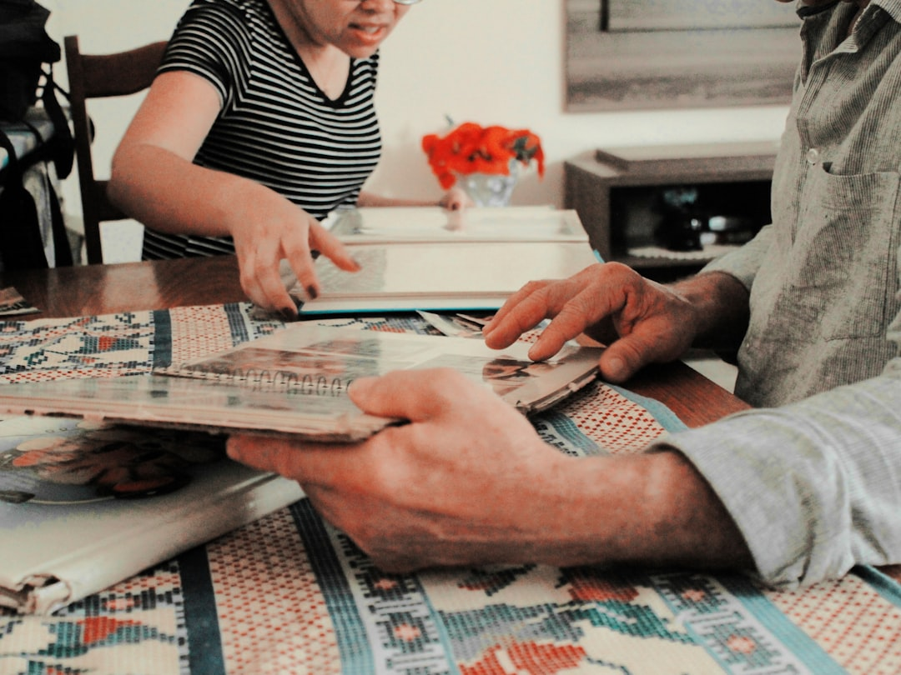
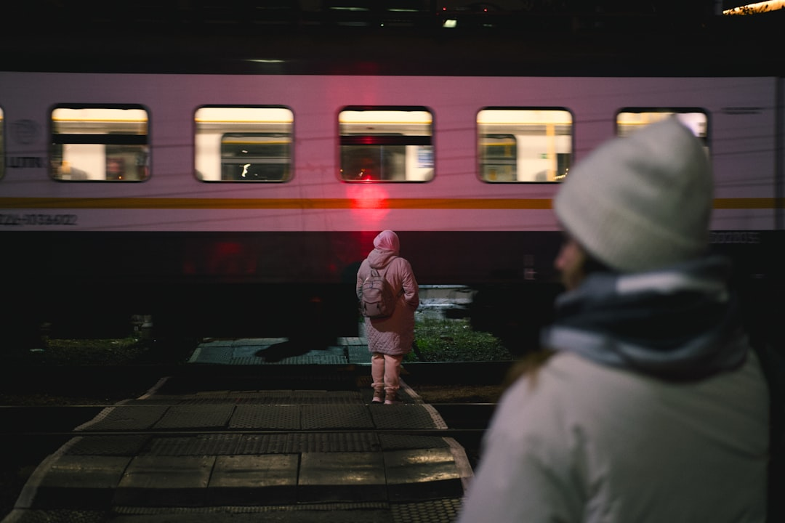

The Silent Language of Fathers: When Love Speaks Without Words
There are moments in life that crystallize into profound realizations, moments that shift our understanding of love, family, and the complex dynamics that bind us together. For many of us, these moments often involve our fathers—those stoic figures who shaped us through their actions rather than their words, their sacrifices rather than their speeches.
A young person stands at the threshold of departure, desperately wanting one simple gesture—a hug from their father. Yet the words remain trapped, unspoken, while the father maintains his characteristic reserve. This scene, playing out in countless homes across the world, reveals a universal truth about the silent language of paternal love and the emotional barriers that often prevent its full expression.
The Weight of Unspoken Words
"I made him cry. You know I was so angry that how can someone be so honest. How can someone be so honest that today I am leaving. At least today you should hug me. But no, no, Papa is Papa."
These words capture the frustration of a generation caught between expectation and reality. The anger isn't really about the absence of a hug—it's about the absence of emotional expression in a moment that demands it. When someone is leaving, when change is imminent, when uncertainty looms ahead, the human heart craves connection, validation, and the comfort of physical affection.
But fathers, particularly those from traditional backgrounds, often operate within a different emotional framework. They've been conditioned to show love through provision rather than affection, through protection rather than vulnerability. The father who maintains his composure even as his child leaves isn't necessarily cold—he may simply be operating from a playbook that equates emotional restraint with strength.
The Internal Struggle
"I will tell him, I will tell him Papa, hug me once. Just once, today I am leaving. It is necessary to hug once. I was saying it in my mind, but I couldn't say it."
This internal monologue reveals the painful gap between what we need and what we can express. The child recognizes the necessity of the moment—understands that this departure calls for something more than the usual farewell. Yet social conditioning, family dynamics, and perhaps fear of rejection create an invisible barrier to authentic expression.
How many of us have found ourselves in similar situations, knowing exactly what we need to say or do, but unable to bridge the gap between thought and action? The tragedy isn't just in the father's emotional unavailability—it's equally in the child's inability to break through the established patterns of communication.

Learning Life's Lessons from Silent Teachers
"Maybe someone has said it right, not with a paper, not with a pen, not with a book. I have learnt the art of living life from my father."
This recognition marks a crucial shift in perspective. While formal education teaches us facts, formulas, and theories, our fathers often teach us something far more fundamental—how to navigate life itself. These lessons aren't delivered through lectures or homework assignments. Instead, they're embedded in daily actions, quiet sacrifices, and the consistent presence of someone who shows up, day after day, regardless of recognition or appreciation.
The Unwritten Curriculum of Fatherhood
Fathers teach us resilience through their own example of getting up each morning to provide for their families. They demonstrate responsibility by prioritizing family needs over personal desires. They show us the value of hard work through their own dedication to their jobs, often in roles that may not fulfill them personally but serve the greater good of family welfare.
These lessons in emotional regulation, sacrifice, and duty form the foundation of character. While a child might crave verbal affirmation or physical affection, they're simultaneously absorbing deeper truths about commitment, perseverance, and love expressed through action rather than words.

The Universal Nature of This Story
"Then one day, at a railway station, I saw an old man and his daughter sitting in a train, crying and returning. Then I understood that this is not just my story, but the story of this society, where every father cries with his bed sheet on, and sleeps under the bed of love and tears."
This moment of recognition at the railway station transforms a personal experience into a universal understanding. The sight of another father and child in a similar emotional state reveals that this dynamic isn't unique or isolated—it's a widespread pattern that reflects broader social and cultural conditioning.
The Hidden Emotional Lives of Fathers
The image of fathers crying "with his bed sheet on" is particularly powerful. It suggests that fathers do feel deeply, do experience the pain of separation and the weight of unexpressed love—but they process these emotions privately, away from the eyes of their families. This private grief serves multiple purposes:
- Maintaining the provider role: Fathers often believe that showing vulnerability might undermine their authority or their family's sense of security
- Cultural conditioning: Many societies still expect men to be emotional pillars, strong and unwavering
- Protective instinct: Some fathers believe that shielding their children from their own emotional struggles is a form of love
- Generational patterns: Fathers often parent the way they were parented, perpetuating cycles of emotional restraint
The Economics of Love: Sacrifice and Dreams
"Do you remember? The school fees and the form of dreams. Papa used to make a blanket for us by making his bed smaller."
This metaphor beautifully captures the economic reality of parental love. Fathers often literally make their own lives smaller—their comforts fewer, their dreams deferred—to expand opportunities for their children. The image of making "his bed smaller" to create "a blanket for us" speaks to the tangible ways fathers sacrifice their own comfort for their children's welfare.
The Invisible Sacrifices
Consider the father who:
- Works overtime to pay for music lessons he'll never hear his child practice
- Drives an older car so his children can attend better schools
- Skips meals to ensure there's enough food for everyone else
- Postpones his own dreams to fund his children's education
- Takes on debt to provide opportunities he never had
These sacrifices often go unnoticed because they're woven into the fabric of daily life. Children see the results—the paid school fees, the full dinner table, the opportunities available to them—but may not recognize the personal costs their fathers bear to make these things possible.
The Evolution of Distance
"And we used to run towards him, hearing his car's sound. But we never realised that we had grown so old that we started running away from him."
This observation captures one of the most poignant aspects of growing up. The same children who once eagerly awaited their father's return from work gradually develop their own lives, interests, and priorities. The sound of the car that once meant excitement and connection eventually becomes background noise in increasingly busy lives.
The Natural Progression of Independence
This evolution isn't necessarily negative—it's a natural part of human development. Children are meant to develop independence, to create their own identities separate from their parents. However, the transition can be jarring for both parties:
For the child: The gradual realization that the person who once seemed like a superhero is actually human, with limitations and flaws. This can lead to disappointment, criticism, or emotional distance as the child processes this new understanding.
For the father: Watching the little person who once found joy in simple moments with dad become someone with complex needs, independent thoughts, and sometimes critical perspectives. The father may feel displaced, unneeded, or misunderstood.
Reframing Toughness: The Hidden Tenderness
"And I thought, maybe he wasn't a tough guy. He had just put all his tenderness on his mother's face."
This final realization represents a mature understanding of family dynamics and emotional distribution. Many fathers aren't naturally stoic or emotionally unavailable—they may simply express their tenderness through different channels or relationships. Some fathers find it easier to show affection to their spouses, believing that a loving marriage creates a secure environment for children. Others may express tenderness through actions rather than words, through provision rather than verbal affirmation.
Understanding Different Love Languages
Dr. Gary Chapman's concept of love languages provides a useful framework for understanding these different expressions of affection:
- Acts of Service: Working long hours, maintaining the home, handling practical matters
- Physical Touch: Though often limited by social conditioning, may be expressed through roughhousing, sports, or practical help
- Quality Time: Teaching skills, sharing activities, being present for important events
- Gifts: Providing for needs and wants, sometimes at personal sacrifice
- Words of Affirmation: Often the most challenging for traditionally-minded fathers
Understanding that fathers may naturally gravitate toward certain love languages can help children recognize and appreciate the love that is present, even when it doesn't match their preferred way of receiving affection.
Breaking the Cycle: Creating New Patterns
Recognition of these patterns is the first step toward creating healthier family dynamics. Both fathers and children can take steps to bridge the emotional gaps that tradition and conditioning have created:
For Adult Children:
- Practice direct communication: Instead of hoping for mind-reading, express needs clearly and kindly
- Acknowledge sacrifices: Recognize and verbally appreciate the ways your father has shown love through action
- Create safe spaces: Make it easier for your father to express emotion by modeling vulnerability yourself
- Understand generational differences: Recognize that your father's emotional toolkit may be different from yours, not deficient
For Fathers:
- Practice emotional expression: Start small with simple affirmations or physical affection
- Share your story: Help your children understand your background and the factors that shaped your parenting style
- Ask questions: Show interest in your children's emotional lives and perspectives
- Seek support: Consider counseling or support groups to develop better emotional communication skills
The Railway Station Revelation: Finding Universal Connection
The moment at the railway station—witnessing another father and daughter in tears—serves as a powerful reminder that our personal struggles often reflect universal human experiences. This recognition can be both comforting and motivating:
Comforting because it reminds us that we're not alone in our family struggles, that the challenges we face in connecting with our fathers are shared by countless others.
Motivating because it suggests that change is possible. If this is a widespread pattern, then there's also widespread opportunity for healing, understanding, and improved connection.
Practical Steps Toward Healing
Immediate Actions
- Write a letter: Sometimes it's easier to express feelings in writing first. Write to your father about what you appreciate about him and what you need from the relationship.
- Schedule regular check-ins: Create predictable opportunities for connection, even if they start small.
- Share activities: Find common interests or create new shared experiences that don't require heavy emotional conversation.
- Practice gratitude: Regularly acknowledge the ways your father has contributed to your life, even if they weren't the ways you preferred.
Long-term Strategies
- Family therapy: Professional guidance can help navigate complex family dynamics and communication patterns.
- Gradual boundary expansion: Slowly introduce more emotional openness into the relationship at a pace that feels safe for both parties.
- Create new traditions: Establish new family customs that encourage connection and emotional expression.
- Model the change you want to see: Be the first to express vulnerability, appreciation, and direct emotional needs.
The Ripple Effect: Changing Future Generations
When we work to understand and heal our relationships with our fathers, we're not just improving our own lives—we're potentially changing the trajectory for future generations. The adult child who learns to express emotional needs clearly is more likely to raise children who feel safe expressing their own needs. The father who learns to show affection more openly creates a template for his children's future parenting.
This ripple effect means that the work we do to bridge emotional gaps with our fathers can impact not just our immediate family, but our children, grandchildren, and beyond. Every hug given, every "I love you" spoken, every moment of vulnerability shared contributes to a family culture that values emotional connection alongside strength and provision.
Conclusion: Embracing the Complexity of Paternal Love
The story of wanting a hug from a departing father reveals the beautiful complexity of family relationships. It reminds us that love isn't always expressed in the ways we most want to receive it, but that doesn't make it less real or less valuable. Fathers who show love through sacrifice, provision, and quiet presence are still showing love—even when their children crave verbal affirmation or physical affection.
The key to healing these relationships lies not in changing our fathers to match our emotional needs, but in expanding our understanding of how love can be expressed and received. It involves recognizing the sacrifices made on our behalf, appreciating the lessons taught through example, and taking responsibility for our own role in creating the connection we desire.
Most importantly, it requires us to move beyond the limitations of our childhood perspectives and see our fathers as complete human beings—with their own fears, hopes, conditioning, and capacity for growth. When we can appreciate both the strength and the tenderness, both the provision and the presence, both the spoken and unspoken expressions of love, we create space for deeper, more authentic relationships.
The railway station moment teaches us that this struggle is universal, which means the potential for healing and connection is also universal. Every father-child relationship has the potential for greater understanding, deeper connection, and more authentic love—it just requires the courage to bridge the gap between what we've always done and what we truly need.
In the end, the art of living that we learn from our fathers isn't just about resilience, responsibility, and provision. It's also about recognizing love in all its forms, expressing our needs with courage and kindness, and creating the emotional connections that make life truly meaningful. The hug that was never given doesn't have to define the relationship—it can be the starting point for creating something new.